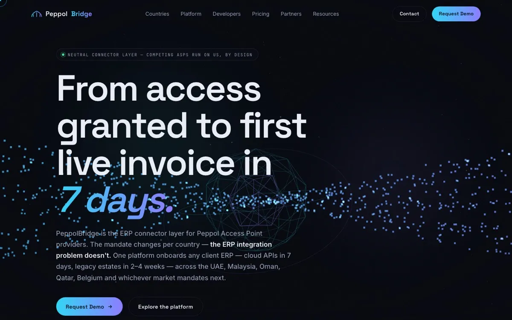
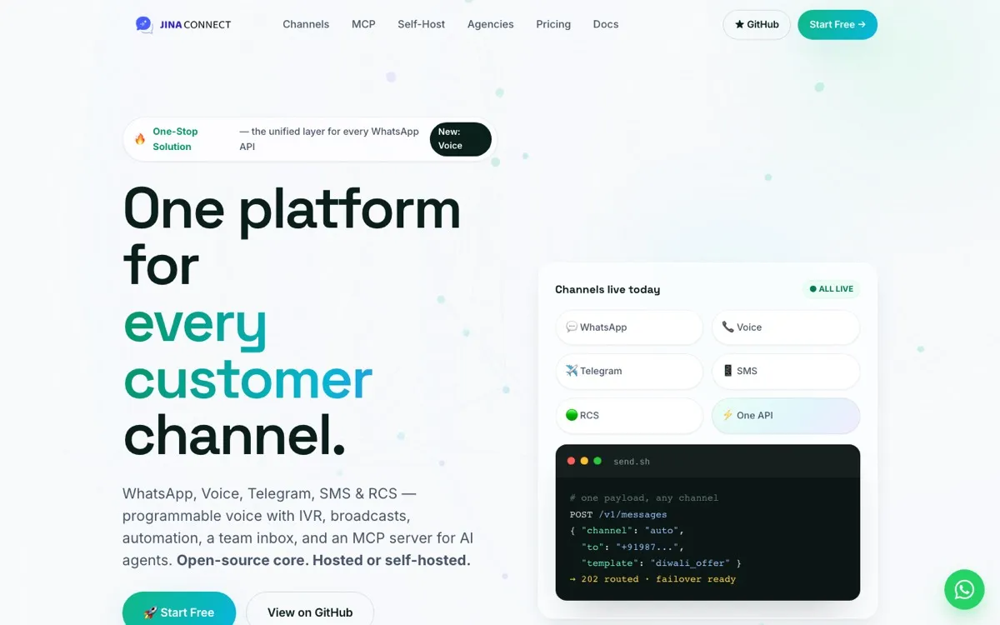
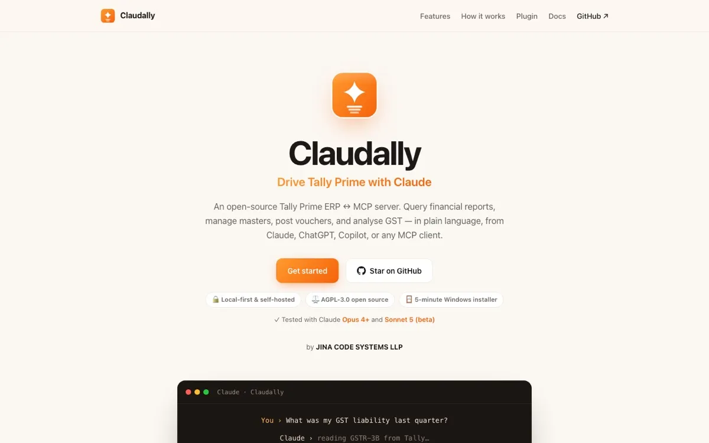

AI systems that hold up in production.
We design, build and run voice agents, agentic workflows and retrieval systems — plus the platforms, data flows and guardrails that make them dependable. Senior engineers only, working software every week.
- input"Move my delivery to Thursday"voice · en-IN
- intentreschedule_order0.97
- retrievedelivery-policy.md, orders-db3 sources
- plancheck_slot → update_order → notify3 steps
- actorders.update(#48213)✓ 212 ms
- guardpolicy · pii · grounding✓ pass
- respond"Done — Thursday, 2 to 4 pm."logged
Services
What we build
Seven practices, one bar: it runs in production, or it isn't done.
Voice AI
Real-time voice agents with barge-in and low latency, plus post-call audit, QA and analytics.
Agentic workflows
Multi-step agents that plan, use tools and act inside defined boundaries — with a full audit trail.
Chatbots & RAG
Grounded answers with citations from your approved sources. Retrieval-first, hallucination-controlled.
WhatsApp automation
Conversations that understand intent, talk to your tools and close the loop: support, sales, payments.
Web & mobile platforms
Enterprise web applications and offline-first mobile, with AI embedded in the core rather than bolted on.
Dedicated pods
Senior engineering pods that plug into your tools and team — under your brand if you're an agency.
Building a Peppol e-invoicing stack? We can help.
We run PeppolBridge in five countries, and build Peppol stacks for businesses, software vendors and access point providers.
AI at the core
The demo is the easy 20%.
Most AI projects stall on the last stretch: evaluation, safety, latency and cost. That stretch is the work we specialise in. Every system we ship comes with all six layers.
The right model for the job. Frontier APIs or open-source models, tuned to be fast, reliable and affordable to run.
Retrieval that stays grounded. Hybrid search, re-ranking and live re-indexing over your approved sources, with citations.
State-driven workflows, not prompt chains. Planning, branching, retries and tool use across your APIs and databases.
Bounded autonomy. Evals in the build, policy checks at runtime, and human checkpoints exactly where they matter.
Know why the AI did what it did. Every decision and action logged, versioned and replayable.
Where your data needs it. Cloud, private cloud or on-prem — air-gapped if required.
Products
We run what we build
Six products of our own, live with real users. The same engineers and the same stack go into client work.

PeppolBridge
One bridge from any ERP to Peppol. 40+ connectors, one canonical model, per-country rule packs.
7 daysfrom access to first live invoice

ERP Connectors
Every ERP, one clean pipeline. Documents out of any accounting system, one canonical model, status written back.
200+ERPs and systems connected

ERP Swapper
Move masters, balances and full history from any ERP to any other — and prove the books still tie out.
Any → anyERP, in either direction

JinaConnect
One API for WhatsApp, voice, Telegram, SMS and RCS — self-hosted and ready for AI agents.
13 MCP toolsfor AI agents, out of the box

Claudally
Talk to your Tally Prime books in plain language. Reports, vouchers and GST through an MCP server.
5 minutesfrom install to talking to your books

GST365
Litigation intelligence for tax practices: notice in, issues mapped to grounds and precedent, draft out.
Hoursto a signable first draft
Client work
Shipped from inside the team
EXIM Routes
The engine behind an IPO-bound trade platform: secure APIs, document-reading pipelines and automation, owned end to end.
23 monthsone team, zero rewrites
IFH Voice Audit
Speech-to-text and language models map every recorded call straight onto the audit questionnaire.
Hours → minutesper audit turnaround
Institute of Humanities
Course architecture, learner journeys and a faculty-run content system across web and mobile.
Web + appon one academic core
How we engage
From first call to live in four weeks
A fixed path with a fixed scope and price. No open-ended contracts, no quietly growing costs.
- Day 0–3
Scope
One focused session to agree the goal, the success metric and the smallest first slice worth building.
- Day 3–7
Join
Engineers join your team, tools and meetings. Access, a plan and first working code inside a week.
- Week 2–4
Ship
New working software every week, shown in a live demo. You set the priorities.
- Ongoing
Hand off
Docs, tests and training so your team fully owns it. Keep us on or carry on alone.
Have something hard to build?
Book a free 30-minute call. We'll tell you honestly whether we're the fastest way to get it done — and if we're not, we'll say so.